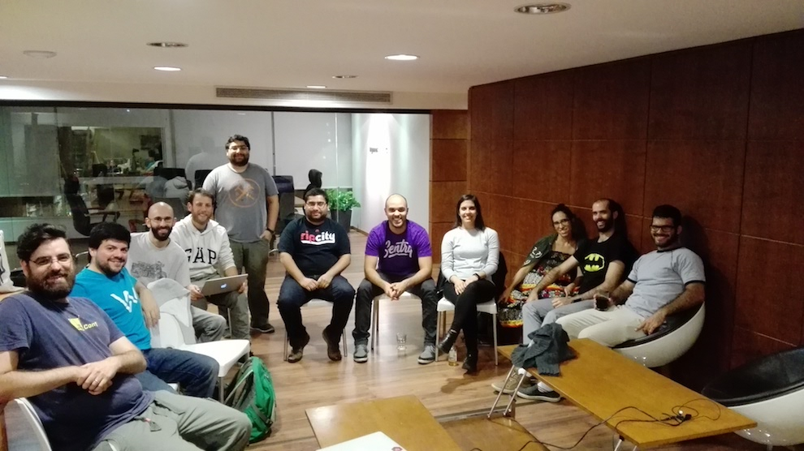

Abril 2017
- Fecha: 18 de Abril de 2017
- Hora: de 19:30 a 22:00
- Participantes: 12

Actividades
- Ember Montevideo App - Julio Barrios
- ☀️.js.uy - Santiago Ferreira
- Meetup Calendar in React - Gabriel Chertok
- Latest ember news - Luis Ferreira
- Static site hostings - Marcelo Dominguez
- WYSIWYG catarsis - Federico Kauffman
Recursos
Novedades
Core
- Ember 2.12.1 & Ember 2.13.0.beta2 released https://github.com/emberjs/ember.js/releases/
- EmberConf 2017: State of the Union - Tom Dale, Yehuda Katz, Godfrey Chan https://emberjs.com/blog/2017/04/05/emberconf-2017-state-of-the-union.html
- Ember Conf 2017 Videos https://www.youtube.com/playlist?list=PL4eq2DPpyBbna_5fLPqOqensqSZpGf-hT
Learning
Fixing memory leaks - Trent Willis https://twitter.com/trentmwillis/status/852268718679773184
How Ember Observer searches addon source code - Michel S. http://codeallday.com/blog/how-ember-observer-searches-addon-source-code/
Designing and Implementing Glimmer Like a Programming Language - Yehuda Katz https://thefeedbackloop.xyz/designing-and-implementing-glimmer-like-a-programming-language/
App-like Scrolling and Transitions with Ember.js and Liquid Fire - Isaac Ezer https://medium.com/@isaacezer/app-like-scrolling-and-transitions-with-ember-js-and-liquid-fire-bce2ad9a13ac
Our Path to Ember - Veli-Matti Luoto https://blog.dockbit.com/our-path-to-ember-bd6ebbf0b94a
Refactoring Promise Patterns - Balint Erdi https://balinterdi.com/blog/refactoring-promise-patterns/
Tool: glimmer-web-component - Library to boot up your Glimmer components as Web Components https://github.com/glimmerjs/glimmer-web-component
Why I’m excited about GlimmerJS - Tristan Edwards https://hackernoon.com/why-im-excited-about-glimmerjs-3631bd0c95c4
Ember Test Selector - EmberMap https://embermap.com/video/ember-test-selectors
ember-redux - Toran Billups https://twitter.com/toranb/status/851410184127860736
The Future of Ember’s Testing and the Beheading of jQuery - Miguel Camba http://miguelcamba.com/blog/2017/04/11/the-future-of-embers-testing-and-the-beheading-of-jquery/
Deploying Glimmer Apps - Robert Jackson http://rwjblue.com/2017/04/18/deploying-glimmer-apps/
Tools and addons
Tool: A simple Ember wrapper for Stripe Elements - Josh Smith https://github.com/code-corps/ember-stripe-elements
Tool: ember-web-workers - Service to communicate your application with browser web workers https://github.com/BBVAEngineering/ember-web-workers
Offtopic
Pacts to make with your team - Sarah Mei https://twitter.com/lukemelia/status/847253099165003776
Choosing Ember over React in 2016 - Jesse Pollak https://blog.instant2fa.com/choosing-ember-over-react-in-2016-41a2e7fd341
Interesting to see Ember actually becoming more Vue-like in terms of framework structuring - Evan You https://twitter.com/youyuxi/status/850020636227391488
EmberCamp 2017 - London - CFP https://cfp.embercamp.com/events/embercamp-ldn-2017
Progressive Web Apps - ILT https://developers.google.com/web/ilt/pwa/
Participantes
- Daniel Gomez (@eldano)
- Emilio Cristalli (@EmilioCristalli)
- Ernesto Cruz (@ercpereda)
- Federico Kauffman (@fedekau)
- Gabriel Chertok (@cherta)
- Jose Javier Señaris Carballo (@pepesenaris)
- Julio Barrios (@jubar)
- Laura Santana Nuñez (@laurasantana)
- Luis Ferreira (@hidnasio)
- Marcelo Dominguez (@marpo60)
- Samanta de Barros (@sdebarros)
- Santiago Ferreira (@san650)
Agradecimiento
Agradecemos a Ingenious Softworks por brindarnos el lugar e invitarnos las bebidas, los snacks y la cena.
Agradecemos a WyeWorks por apoyarnos como sponsor.